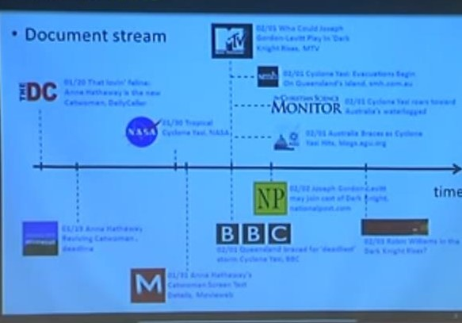

Pushkar Nagar
email: pushkar.nagar09@gmail.com
|
CV | Github
|
I am Senior Software Engineer(Machine Learning) in Nvidia India. Currently I am part of Metropolis team a initiative towards building city scale AI systems, working primarily on algorithms and applications of City scale use Cases. My research interests broadly include Efficient and Large-Scale Machine Learning, Natural Language Processing, Graph Neural Networks, Timed Intervention Failure Prediction.
Before Joining Nvidia, I completed my master's in System science and Automation(name changed to AI) from Indian Institute of Science Bangalore where I was fortunate enough to be advised by Prof. Chiranjib Bhattacharyya on my Master Thesis.
|
|  |
Time varying Topics for Modeling Content Diffusion over Social Network
Pushkar Nagar and Chirajib Bhattacharyya
Master's Thesis, SSE IISc Bangalore, 2016-17
abstract /
bibtex /
pdf /
presentation /
Clustering in document streams, such as online news articles or continuous streamdocuments can be induced by their textual contents, as well as by the temporal dynamics oftheir arriving patterns. We consider the clustering of short length documents by taking intoaccount the temporal dynamics of clusters(topics) and how these topics are influencing eachother i.e. also obtaining the Topic Influence Network.Topic Influence Network is helpful in understanding the dynamics of informationdiffusion through cluster network at broader level, which helps in analyzing the generation ofclusters which are being affected by generation of other clusters. We consider a situation whichis analogous to finding the topic influence network where the users are considered as source ofposting documents thus forming a network. Also we study how information diffusion occursacross the network which eventually helps in finding the user level clusters and topic levelclusters.
@article{pushkar17,
author = {Nagar, Pushkar and Bhattacharyya,
Chiranjib},
title = {Time varying Topics for Modeling Content Diffusion over Social Network},
booktitle = {Master's Thesis, sse IISc Bangalore},
year = {2016-2017},
}
|
|
Generating rules using Maximum Likelihood Rule Ensemble
Pushkar Nagar
HP Inc. 2018-19
abstract /
bibtex /
pdf /
code /
Generating Interpretable Rules responsible for Model performance is well established problem in Explainable AI.
Classical ML methods like XGboost, Random Forest etc does not have systematic way of giving prior in form of human readable rules. Maximum Likelihood
Rule Ensemble ICML,2008 generates simpler rules by maximizing the log likelihood of data in boosting framework. I have added a feature in model to give prior information
as human readable rules. This way our model will always perform with some predefined bias.
@article{mle,
author = {Nagar Pushkar},
title = {Generating rules using Maximum Likelihood Rule Ensemble},
booktitle = {Applied Research work, IISc Bangalore},
year = {2018-2019},
}
|
|